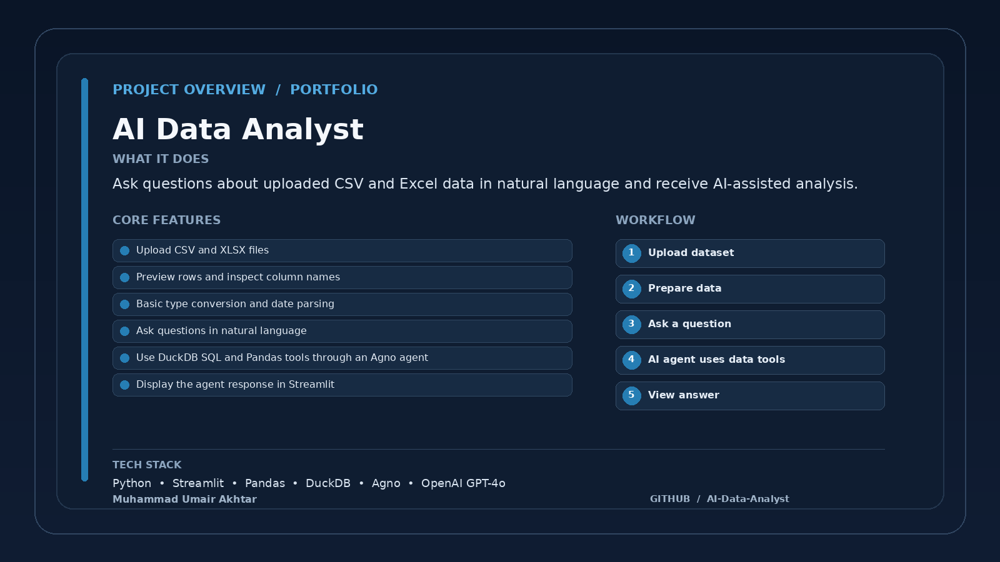
PROJECT 01
AI Data Analyst
Ask questions about uploaded CSV and Excel data in natural language and receive AI-assisted analysis.
Explore project details ↗PYTHON · MACHINE LEARNING · DATA SCIENCE
I work with Python, machine learning and data analysis to turn raw data and practical ideas into useful applications, automation tools and intelligent workflows.
01 / ABOUT ME
I’m Muhammad Umair Akhtar, an Artificial Intelligence student at The Islamia University of Bahawalpur. I’m interested in Python development, machine learning, data science, automation and building AI-powered applications.
My project work includes data analysis dashboards, machine-learning experiments, NLP, automation utilities, web scraping and application development. I enjoy learning by building, documenting what a project does, and improving it step by step.
My approach: Understand the problem → prepare the data → build → test → improve.
02 / TECHNICAL SKILLS
Python, JavaScript fundamentals
NumPy, Pandas, data cleaning, EDA
Scikit-learn, regression, classification, clustering, ensemble learning
TensorFlow, Keras, neural network fundamentals
Matplotlib, Seaborn, dashboards
LLMs, prompt engineering, TF-IDF, NLP fundamentals
Beautiful Soup, Selenium
Git, GitHub, Jupyter Notebook, VS Code
03 / SELECTED WORK
Explore the project cards. Each project opens its own page with its overview, features, technologies, workflow and repository link.

Ask questions about uploaded CSV and Excel data in natural language and receive AI-assisted analysis.
Explore project details ↗
Sort files into extension-based folders and produce a PDF inventory report with a reversible move record.
Explore project details ↗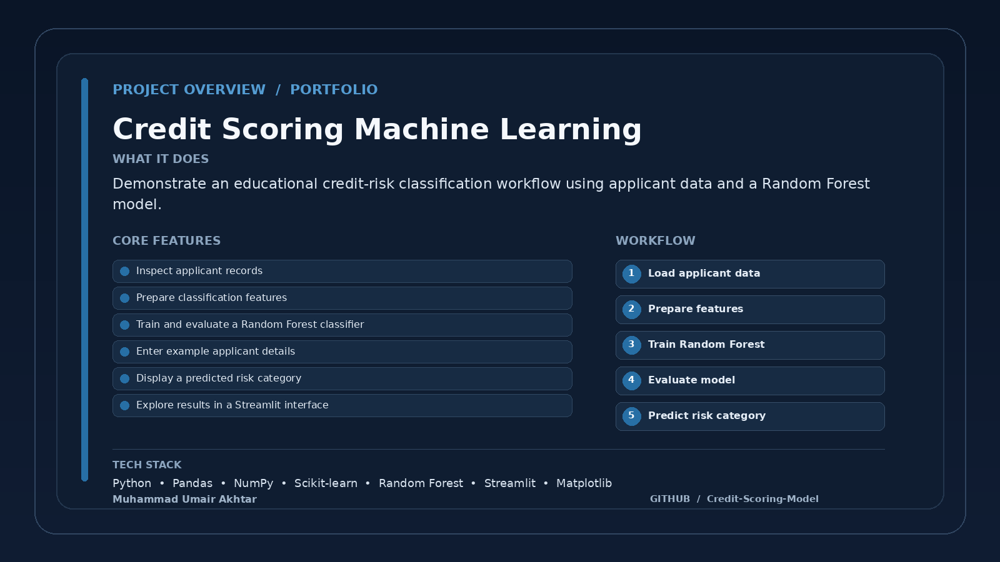
Demonstrate an educational credit-risk classification workflow using applicant data and a Random Forest model.
Explore project details ↗
Explore customer churn patterns and estimate customer-level churn risk through an interactive dashboard.
Explore project details ↗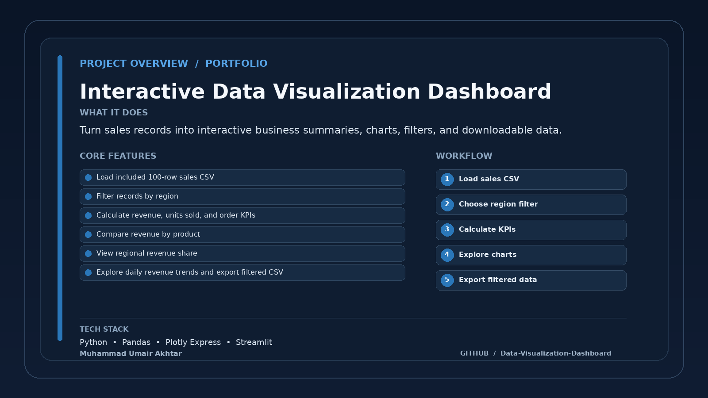
Turn sales records into interactive business summaries, charts, filters, and downloadable data.
Explore project details ↗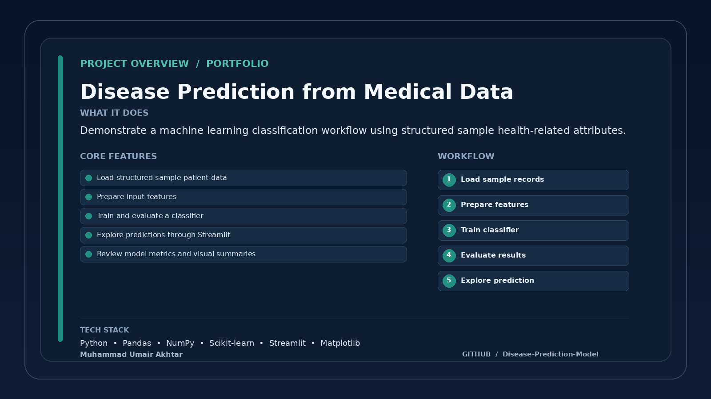
Demonstrate a machine learning classification workflow using structured sample health-related attributes.
Explore project details ↗
Classify handwritten digits from image pixel features using a Scikit-learn neural-network classifier.
Explore project details ↗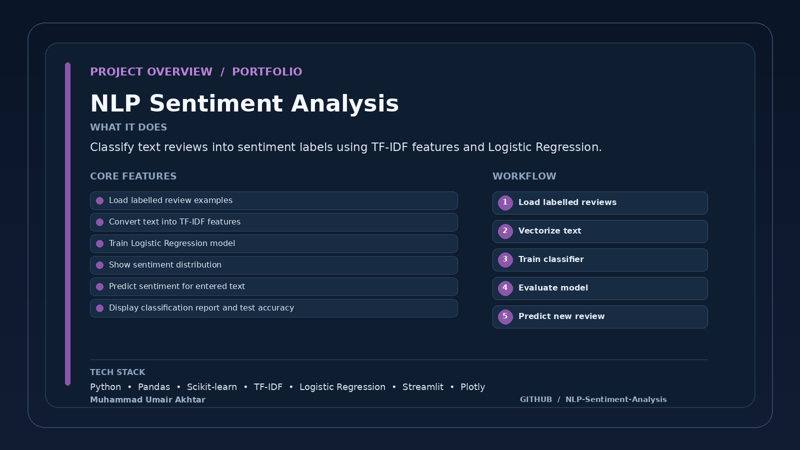
Classify text reviews into sentiment labels using TF-IDF features and Logistic Regression.
Explore project details ↗
Record personal income and expenses, set monthly category budgets, and review balances in a Flask web app.
Explore project details ↗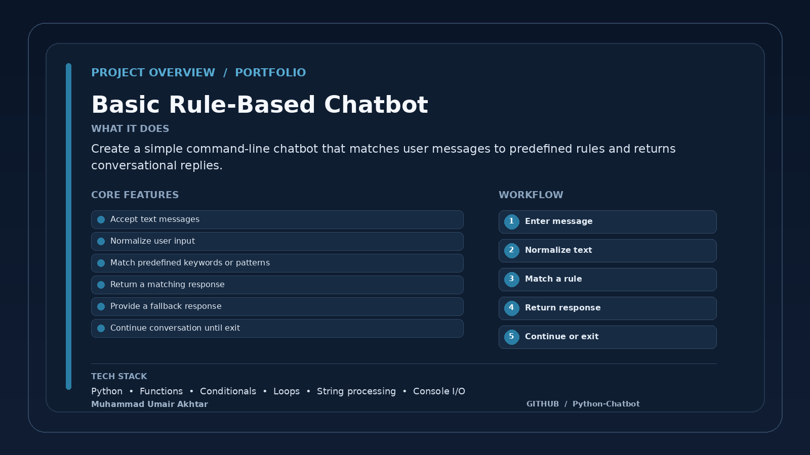
Create a simple command-line chatbot that matches user messages to predefined rules and returns conversational replies.
Explore project details ↗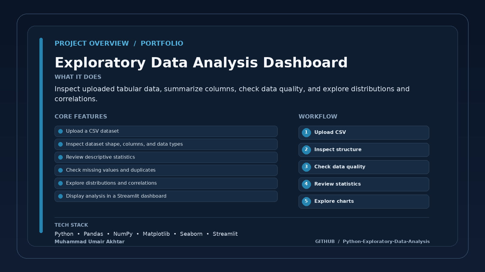
Inspect uploaded tabular data, summarize columns, check data quality, and explore distributions and correlations.
Explore project details ↗
Build a command-line word guessing game to practise Python fundamentals and input handling.
Explore project details ↗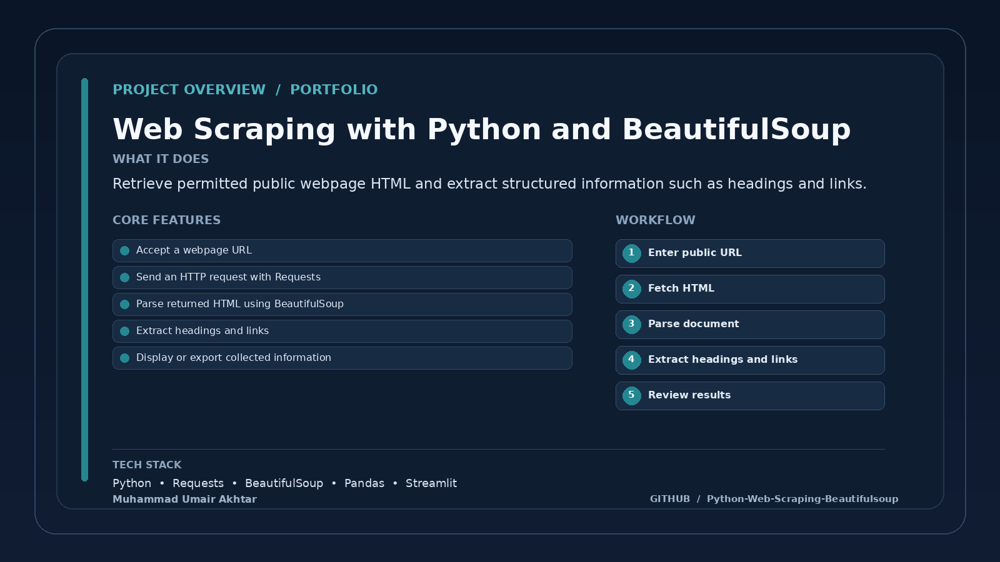
Retrieve permitted public webpage HTML and extract structured information such as headings and links.
Explore project details ↗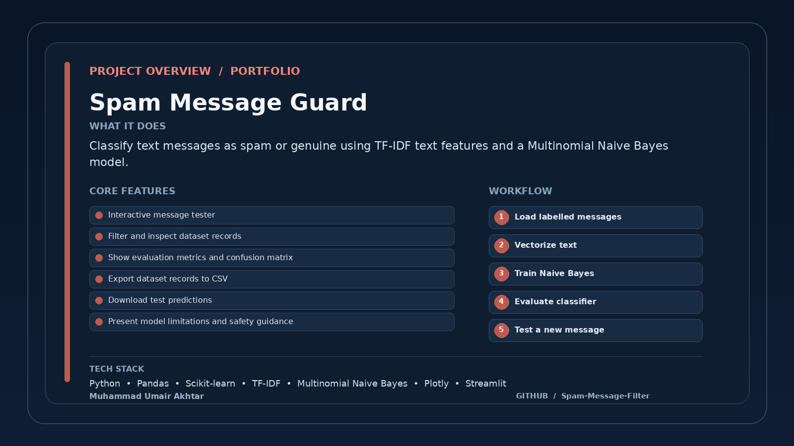
Classify text messages as spam or genuine using TF-IDF text features and a Multinomial Naive Bayes model.
Explore project details ↗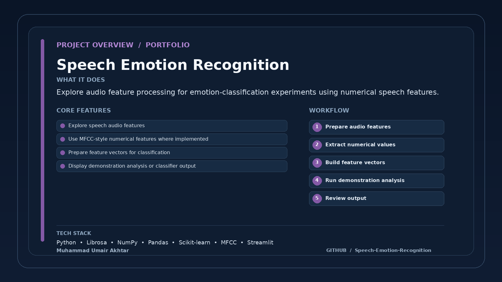
Explore audio feature processing for emotion-classification experiments using numerical speech features.
Explore project details ↗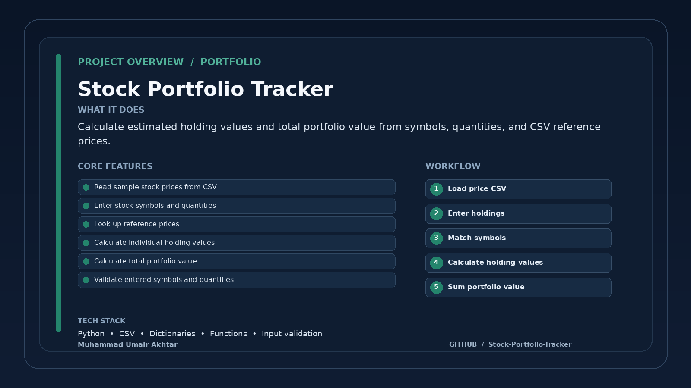
Calculate estimated holding values and total portfolio value from symbols, quantities, and CSV reference prices.
Explore project details ↗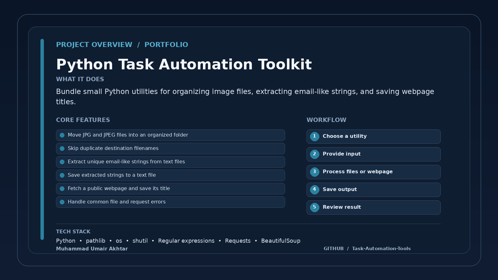
Bundle small Python utilities for organizing image files, extracting email-like strings, and saving webpage titles.
Explore project details ↗Collect product prices from permitted public pages, store dated observations in SQLite, and visualize price history.
Explore project details ↗
Manage multiple shops, staff roles, stock, sales, customer khata, expenses, and daily reports from one private web application.
Explore project details ↗04 / AREAS OF INTEREST
Data cleaning, exploratory analysis, summaries and visual reporting.
Learning and implementing supervised and unsupervised model workflows.
Small tools and scripts that simplify repetitive tasks.
Exploring LLM-powered workflows and data-driven applications.
05 / EXPERIENCE
Jun – Aug 2026
Contributed to AI-powered CRM features using Python, machine learning and LLM-based workflows.
Aug – Oct 2026
Developed machine-learning models and performed exploratory data analysis using Python, Pandas, Scikit-learn, Matplotlib and Seaborn.
06 / EDUCATION & TRAINING
The Islamia University of Bahawalpur · Currently studying
NexSkill, Arfa Software Technology Park
Python for AI & Data Science, Machine Learning with Scikit-learn, Deep Learning with TensorFlow, Data Analysis & Visualization, Generative AI & LLM Fundamentals.
Graphic Design Diploma · MS Office Course
07 / RESUME
View or download my current CV in PDF format.
08 / CONTACT
Open to internships, collaborations, remote opportunities and freelance projects.